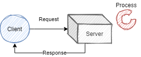
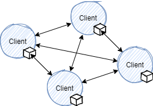

Distributed_systems
A distributed system is one in which components at networked computers coordinate their actions only by passing messages.
Characteristics of Distributed Systems
Distributed systems want to share resources.
- Concurrency: distributed systems are highly concurrent, and share each other’s resources. “I can do my work, and you can do yours. We can share each others resources when needed.”.
- Global Clocks: distributed systems rely on close cooridnation to efficiently send and respond to messaging between components. This depends on a shared understanding of time in which there are limits to the accuracy of clock synchronization.
- Independent failures: distibuted systems may fail in a way not immediately knwon to the rest of the system, failing independantly. It is important to for such systems to be “fault tolerant”.
- Transparency: although made of many shared resources a distributed system must interact with other systems as one computer, and appear as so to external clients.
- Scaling: the architecture of distributed systems should respond as well as possible to new nodes and components. Introducing new clusters et al. should not slow down the system.
- Heterogeneous: Components are not all the same, and vary in many ways - including vendors.
Internet Protocols
Distributed systems use internet protocols to coordinate messages. The protocols used are independant on the OSI model, and often send via IP through a secondary protocol, such as TCP.
Internet Protocol: Repsonsible for routing packets and is limited in length. Additionally the IP v4 protocol resevres 64 bits for addresses, whilst v6 reserves 128.
Transmission Control Protocol: Sits a layer above IP, Capable of subdividing data into packets and reassembling them in order. The extra reliability measures introduce overhead to TCP.
- Establishes bidirectional connections
- Includes packet checksums
- Controls transmission rate
User Datagram Protocol: Encapsulares data into IP packets called datagrams. There is no connection established, and this is why UDP is known as connectionless, meaning that packets are sent to the destination whether it is open or not. This is the main reason UDP has negligable overhead and is a “fast” communication.
Note that IP can only route between computers, and inter-process communciation requires TCP or UDP. All communication needs to be sent to a port, so that the client (and host) can maintain multiple streams of communcation at once. Applications use a socket construct to attain a port, and bind a data stream to it. Hence a port exists within the host os whilst a socket is an abstraction allowing interfaces.
In general a server and a client will open a socket. The client will connect to the port of the server socket, whilst the server socket will actively listen for any incoming requests (TCP) or accept data on the sockets input stream (UDP). When running via the TCP protocol the server will track each connected socket, and respond individually (bi-directional communication).
(server)
socket <- create socket
loop:
if socket.listen:
thread <- create thread
thread.run:
obtain streams from client socket
read/write to streams
close streams
close client socket
(client)
socket <- create socket
obtain streams from socket
read/write to streams
close streams
close socket
Architectures
…topic reserved for future…
Client-Server

Peer to Peer
In a peer to peer architecture clients are also servers, any node can request a service from another, which can then do the same (aka proxy).
